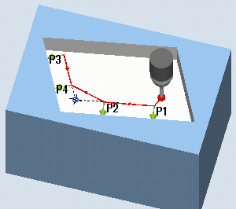
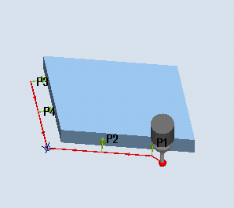
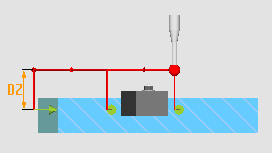

This measuring variant can be used to measure the inside or outside corner of an unknown workpiece geometry. The measurements are performed paraxially to the WCS. The measuring motion parallel to the edge can be adapted with the screen form parameter α0. This angle specification has no effect on the result.
After the measurement, the position of the corner can be used as workpiece zero in a specified work offset (WO).
The measuring cycle traverses to the 4 measuring points (P1 to P4) one after the other and establishes the point of intersection of the resulting straight lines and the angle of rotation to the reference edge of measuring points P1 and P2 to the 1st axis of the plane (X for G17) in the positive direction
The intersection/angle of the corner represents its position. These are saved in the OVR[] result parameters as MCS and WCS values. If the determined corner point is used as a workpiece zero, the setpoint value specifications X0, Y0 (e.g. G17) are taken into account in the calculation of the work offset.
The position of points P1 and P2 in relation to each other determines the direction of the 1st axis of the plane of the new coordinate system.
|  Measure: Any corner, inside (CYCLE961) |  Measure: Any corner, outside (CYCLE961) |
The probe must be called as a tool with a tool length compensation.
Tool type of the probe:
3D multi probe (type 710)
Mono probe (type 712) only with function variant "polar"
| Note |
A SPOS-capable spindle is required probe type 712. |
The probe is at the measuring height or above the corner (see protection zone) opposite to the corner to be measured or in front of the 1st measuring point.
The measuring points must be able to be approached from here collision-free.
The measuring cycle generates the required traversing blocks and performs the measurements at the measuring points P1 to P4, starting with P1.
Positioning measuring points P1 to P4 taking into account a protection zone
Protection zone = no
The probe is pre-positioned at the measuring height and remains at this measuring height when measuring the corner. An outer corner is traversed around.
Protection zone = yes
The probe is pre-positioned above the corner. When measuring, the 3rd axis of the plane (Z for G17) is moved by the value in parameter DZ to the measuring height, and the corresponding measuring point is measured. After the measurement, the probe is raised by the value of parameter DZ and moves to the next measuring point, where it is lowered again.
0 (measuring height + DZ) for G17">Protection zone = yes: Traversing around the outer corner with DZ>0 (measuring height + DZ) for G17
After the last measurement, the probe is at measuring point P4.
Depending on the protection zone parameter (yes/no), the probe is at the measuring height or above the corner.
See also:
Measure: any corner (CYCLE961)